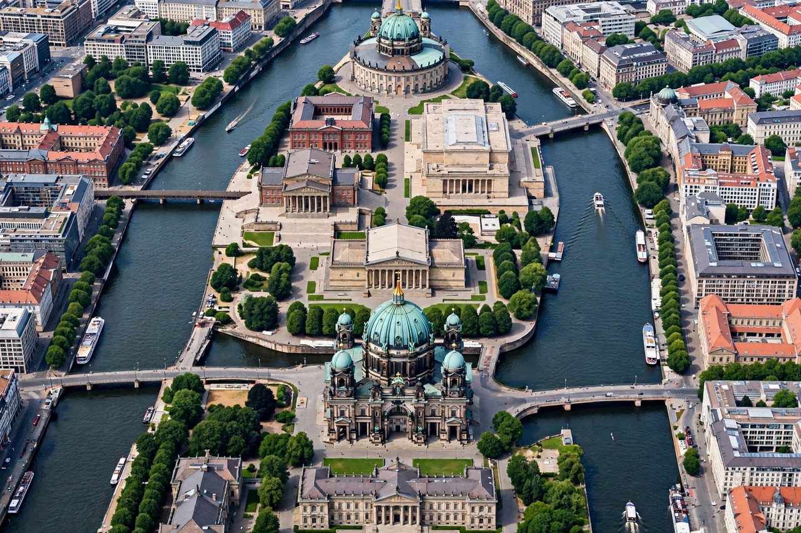

Museum Island
| Museum Island | |
|---|---|
 | |
| Location | Mitte, Berlin, Germany |
| Museums | Altes Museum; Neues Museum; Alte Nationalgalerie; Bode Museum; Pergamon Museum |
| UNESCO | World Heritage Site since 1999 |
Museum Island (German: Museumsinsel) is a museum complex on the northern part of the island in the Spree river in the centre of Berlin, Germany. Built between 1824 and 1930 by order of the Prussian kings, it comprises five internationally renowned museums and was designated a UNESCO World Heritage Site in 1999, honoured as a unique ensemble of museum architecture and a landmark in the history of the public museum.
The five museums
- Altes Museum (1830), designed by Karl Friedrich Schinkel, holds the Collection of Classical Antiquities.
- Neues Museum (1859), rebuilt under David Chipperfield and reopened in 2009, houses the Egyptian Museum — including the bust of Nefertiti — and prehistoric collections.
- Alte Nationalgalerie (1876) displays 19th-century European art.
- Bode Museum (1904), at the island's northern tip, contains sculpture, Byzantine art, and the coin cabinet.
- Pergamon Museum (1930) holds the Pergamon Altar, the Ishtar Gate of Babylon, and the Museum of Islamic Art.
History
The island's transformation was decreed by Frederick William IV, who envisioned a sanctuary of art and science. The complex was badly damaged in the Second World War; during the division of Berlin it lay in the East, and restoration continued for decades after reunification. A masterplan adopted in 1999 is progressively modernising the buildings and linking them with an underground archaeological promenade; the James Simon Gallery, opened in 2019, serves as the central entrance building.
Opposite the island stands the Berlin Cathedral (Berliner Dom), and the Humboldt Forum in the reconstructed Berlin Palace opened in 2020–21 on the island's southern half.